¶ There are many types of motorcycle twist grip throttles, but they all do the same thing. Open and close the engine's carburetor(s). When a throttle cable fails it usually fails at the twist grip end. This is because the end of the cable is being flexed back and forth repeatedly as you use the throttle. Because of this, motorcycle manufacturers use lots of different ways of pulling the end of a throttle cable.
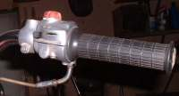 Honda single cable throttle Notice the twist grip housing includes electrical switches. |
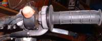 Another Honda single cable throttle Notice the twist grip housing does not contain any electrical switches. |
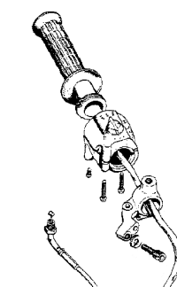 Exploded view of a Honda single cable throttle. |
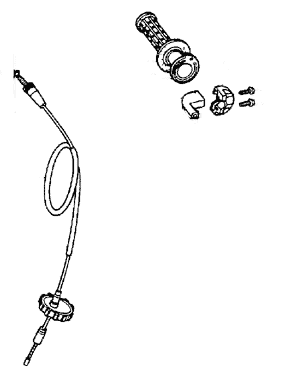 Another Honda single cable exploded view. |
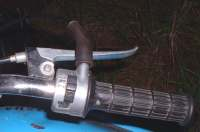 Yamaha 80 Twist grip with switches. |
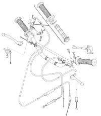 Yamaha Exploded twist grip without switches. |
Notice on these examples. The cable is curved gently as it inters the twist grip to lessen the bending of the cable. The less bend there is the longer the cable will last. To help this some twist grips eliminate the bend entirely by pulling the cable in a straight line. BMW uses a gear arrangement like a bevel shaft drive.
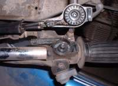 BMW twist grip. |
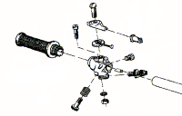 Exploded view. |
Some twist grips use a grip with a spiral groove cut in it. A small block holds the end of the throttle cable. This block fits into rectangle slot cut in the handle bar. A small knob cast into this block fits into the groove in the twist grip. When the grip is turned, the block slides back and forth in the rectangle slot in the handle bar. This pulls the cable which, in turn, opens the throttle. I have seen this type of throttle on cheap mini-bikes, small Hondas like the old Trail 90 and of all things, older shovel head Harley-Davidsons.
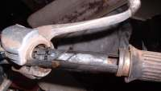 Honda CT-90 Twist Grip with switches. |
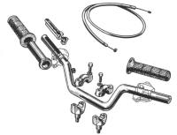 Honda CT-90 Exploded view. |
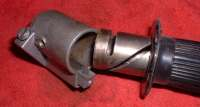 Cheap, mini bike, twist grip with no switches. |
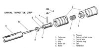 Harley-Davidson twist grip. |
Now, just to make things interesting, we also have twin cable twist grip throttles. These throttles have one cable to open the throttle(s) and one cable to close the throttle. Now you might ask why? Well, I remember riding my old trail 90 one winter back in 1967. It was quite cold out, maybe 15 degrees Fahrenheit. I was running about 50-55 miles an hour and I shut off the throttle. Only thing was, the bike didn't shut down but kept right on going! The throttle had frozen wide open! I realized what had happened and reached down and shut the key off, killing the engine. Theoretically, a twin cable set up would have prevented this... maybe. Anyway, that's the idea. You can always close the throttle. I always considered twin cable setups a royal pain in the rear. Most twin cable set ups make it a hard to replace a broken cable. I've seen a lot of guys just take the return cable off and run things like a single cable set up. I DO NOT recommend this. It's really not that much hassle making the twin cable set up work so keep it, if possible. The twin cable set up was all the rage in the 1980's but then seemed to fall out of favor. However, there still are a lot of new bikes with them. I must confess I don't like them. I prefer the cables that just pop off the carbs.
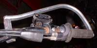 Twin cable twist grip. |
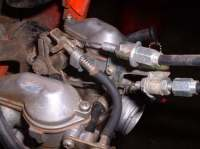 Carburetor end of the twin cable setup. |
All these throttle set ups are sort of the same for replacement or service. Loosen the cable adjuster and run it in so you have lots of throttle play. Unscrew all the screws holding the twist grip on the handle bar and unhook the cable ends. For lube I like light oil or graphite. If there are any gears or it's one of the sliding designs use grease.
While we are talking about twist grips maybe I should cover grip cover replacement. Usually you cut off the old ones and glue on the new ones. Sometimes you can get them off by slipping a very thin screw driver between the grip and the handle bar. Then squirt some penetrating oil in along the screw driver shaft. Pull the screw driver out and work the grip back and forth. That will get them off in one piece perhaps 30% of the time. I don't like to glue them on because sometimes, for whatever reason, you just need to take the grips off. If they are glued on you will probably ruin the grips getting them off. What I do is this. I wrap the handle bar with plain, ordinary masking tape. I wrap it the length of the grip and then try to put the grip on. If it feels loose I add another layer of masking tape. It's a bit hard to get on but you can take it back off without ruining the grip. If you don't like this method then just glue it on.
One last kind of throttle you will run into is not a twist grip throttle at all, but a thumb throttle. These are used on three and four wheel ATV vehicles. You service them just like all the others.
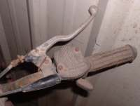 ATV Throttle. |
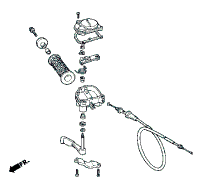 Exploded ATV Throttle. |

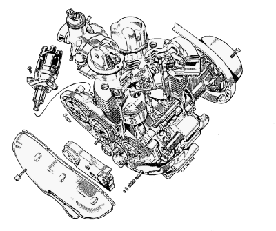 |
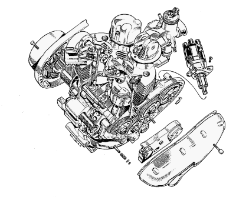 |
Copyright © 1999-2007 dansmc.com. All rights reserved.